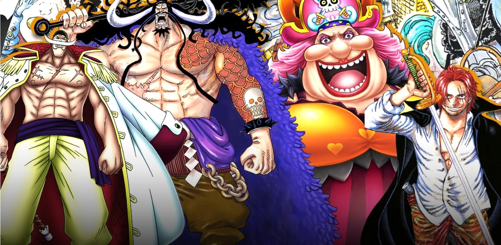
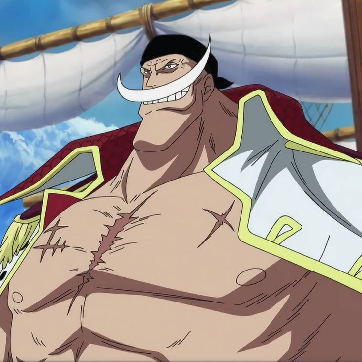
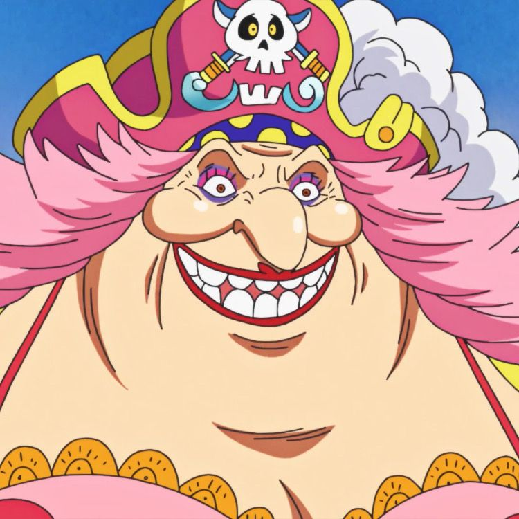
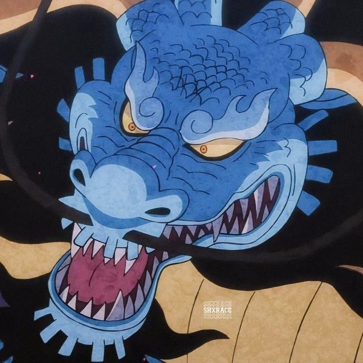
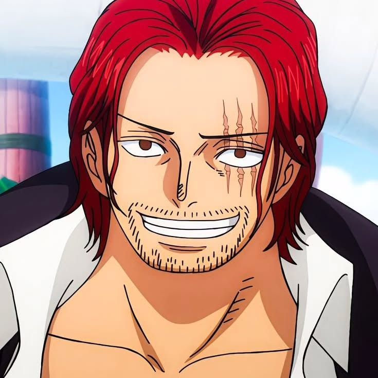
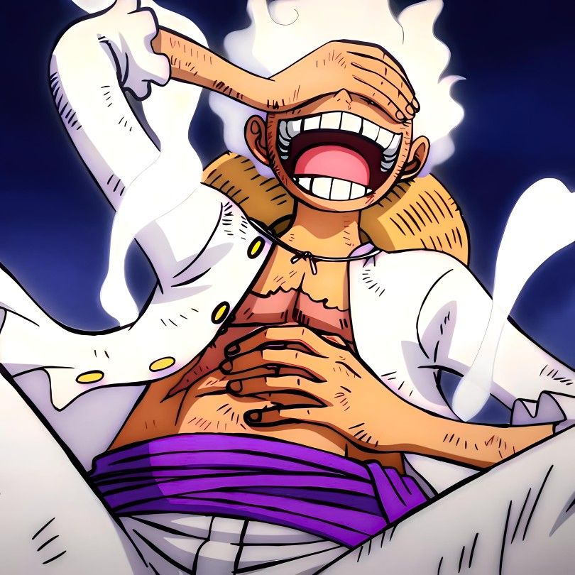
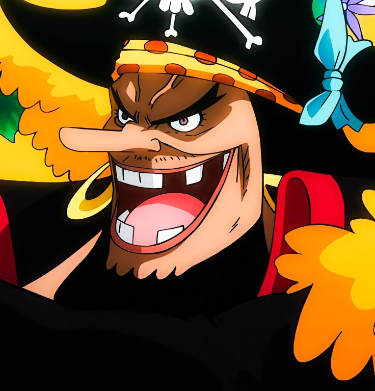

One Piece
Los Yonkos
Los Yonkos son los cuatro piratas mas poderosos e influyentes del mundo de One Piece. Gobiernan enormes territorios en el New World y forman parte del equilibrio global junto a la Marina y, antiguamente, los Shichibukai.
Volver a One PieceGuia general
Los emperadores del mar
Un Yonko no es solo un monstruo en combate. Tambien lidera tripulaciones enormes, controla islas y paises enteros, tiene comandantes peligrosos y puede cambiar el equilibrio del mundo con una sola decision.
Por eso los emperadores son vistos como una de las tres grandes fuerzas del mundo. Cuando uno cae, el mapa politico del New World cambia por completo.
- Gobiernan territorios inmensos dentro del New World.
- Sus enfrentamientos alteran el equilibrio entre piratas, Marina y Gobierno Mundial.
- La lista de Yonkos cambia con el paso de las grandes guerras y derrotas.
Los Yonkos originales

Edward Newgate (Barbablanca)
Yonko originalDe que va: conocido como el hombre mas fuerte del mundo, protegia muchisimas islas y queria una familia mas que riquezas.
Poder: Gura Gura no Mi, fuerza monstruosa y un haki extremadamente poderoso.
Estado: murio en Marineford tras una de las guerras mas grandes de la serie.

Charlotte Linlin (Big Mom)
Yonko originalDe que va: gobernante de Whole Cake Island, obsesionada con crear un mundo donde todas las razas convivan.
Poder: manipulacion de almas y una fuerza absurda desde la infancia.
Estado: derrotada en Wano tras la guerra contra Kaido y la alianza pirata.

Kaido
Yonko originalDe que va: la criatura mas fuerte del mundo y dictador de Wano durante anos.
Poder: Zoan mitica de dragon y una resistencia casi imposible de superar.
Estado: derrotado en Wano por Luffy en una batalla historica.

Shanks
Yonko originalDe que va: inspiro a Luffy a ser pirata y sigue siendo uno de los personajes mas misteriosos de One Piece.
Poder: haki probablemente entre los mas altos del mundo y ningun poder de Fruta del Diablo.
Caracteristica: es el emperador mas equilibrado, respetado y diplomaticamente temido.
Los Yonkos actuales

Monkey D. Luffy
Yonko actualDe que va: tras derrotar a Kaido fue reconocido oficialmente como Emperador del Mar.
Poder: Gear 5, haki avanzado y una enorme red de aliados y flota propia.

Marshall D. Teach (Barbanegra)
Yonko actualDe que va: principal antagonista pirata de la serie y una figura extremadamente ambiciosa.
Poder: oscuridad, terremotos y el caso unico conocido de dos frutas activas en un solo usuario.

Buggy
Yonko actualDe que va: se convirtio en Yonko mas por reputacion, caos y malentendidos gigantes que por dominio real.
Poder real: es mucho mas debil que otros emperadores, pero dirige Cross Guild junto a Mihawk y Crocodile.
Shanks
Yonko actualDe que va: sigue siendo uno de los emperadores activos y uno de los nombres mas respetados del mar.
Poder: su haki y su presencia siguen colocandolo entre las cumbres absolutas del mundo.
Que hace tan peligroso a un Yonko
- Fuerza personal. Son monstruos en combate capaces de destruir ejercitos enteros o cambiar una guerra.
- Tripulacion. Cada uno tiene comandantes y oficiales extremadamente fuertes.
- Territorio. Controlan paises, islas y rutas enteras del New World.
- Influencia. Su sola presencia puede cambiar el equilibrio mundial.
Tripulaciones Yonko mas famosas
- Red Hair Pirates
- Whitebeard Pirates
- Big Mom Pirates
- Beasts Pirates
- Blackbeard Pirates
- Cross Guild
- Straw Hat Pirates